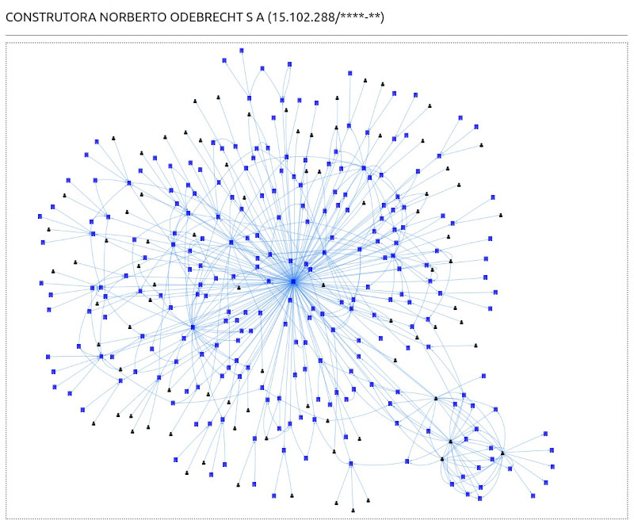
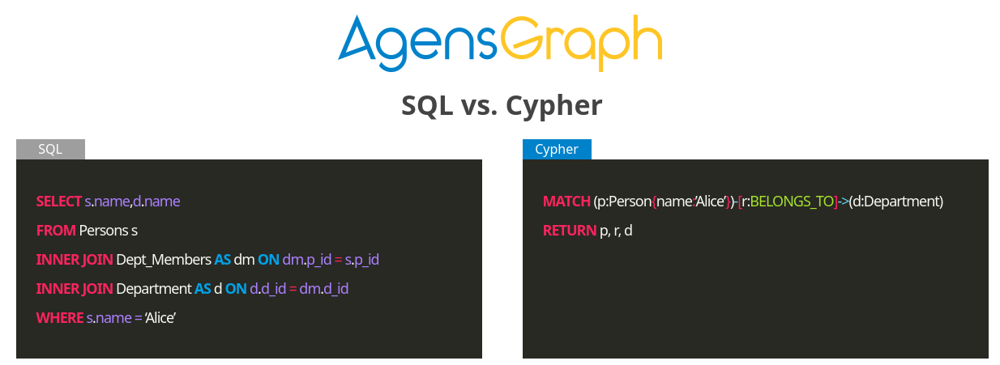
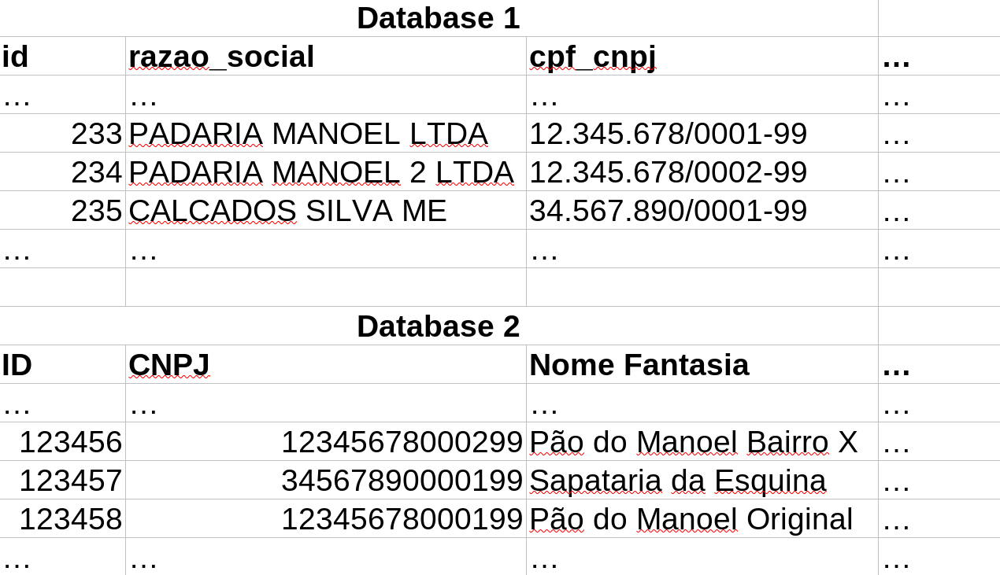
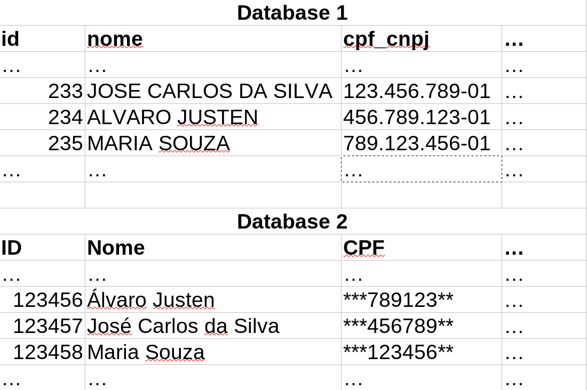

$ whoami
Turicas, prazer! =)
Sigam-me os bons:
## Agenda
- Exemplos de problemas ao cruzar bases de dados abertas
- (também acontecem com dados privados)
- Métodos para resolver alguns desses problemas
- URLid
Software Livre & Python
(desde 2004/2005)

Brasil.IO

“
Restringir acesso a dados públicos é elitizar a democracia.
”
-- Manifesto Brasil.IO
## Brasil.IO - Bases de dados disponíveis
- Receita Federal
- Empresas
- Sócios
- CNAE
- Tribunal Superior Eleitoral
- Candidaturas
- Doadores
- Gastos de campanha
- Portal da Transparência do Governo Federal
- Acordos de Leniência
- Empresas inidôneas
- ...
- IBAMA
- ...
Grafos
Diversas aplicações, como em investigações

Grafos no postgres
AgensGraph + Apache AGE

Como cruzar esses dados?
Ex: inidôneas com doadores eleitorais

## INNER JOIN
### Com alguma transformação
```sql
SELECT
...
FROM t1
INNER JOIN t2
ON hash(t1.*) = hash(t2.*)
```
## INNER JOIN + REGEXP_REPLACE
```sql
SELECT
...
FROM t1
INNER JOIN t2
ON REGEXP_REPLACE(t1.cpf_cnpj, '[./-]', '', 'g')
= REGEXP_REPLACE(t2.CNPJ, '[./-]', '', 'g')
```
## INNER JOIN + clean
```sql
CREATE OR REPLACE FUNCTION clean(value TEXT)
RETURNS TEXT AS $$
BEGIN
RETURN REGEXP_REPLACE(value, '[./-]+', '', 'g');
END; $$ LANGUAGE 'plpgsql' IMMUTABLE;
```
```sql
SELECT
...
FROM t1
INNER JOIN t2
ON clean(t1.cpf_cnpj) = clean(t2.CNPJ)
```
Como cruzar esses dados?
Ex: candidatos e sócios de empresas

## slug
```sql
CREATE EXTENSION IF NOT EXISTS "unaccent";
CREATE OR REPLACE FUNCTION slug(value TEXT)
RETURNS TEXT AS $$
BEGIN
RETURN REGEXP_REPLACE(
REGEXP_REPLACE(
REGEXP_REPLACE(
REGEXP_REPLACE(
lower(unaccent(value)),
'[^a-z0-9_-]+', '-', 'g'
),
'-+', '-', 'g'
),
'^-', ''
),
'-$', ''
);
END; $$ LANGUAGE 'plpgsql' IMMUTABLE;
```
```sql
SELECT slug('ALVARO JUSTEN'), slug('Álvaro Justen');
slug | slug
---------------+---------------
alvaro-justen | alvaro-justen
```
## INNER JOIN + slug
```sql
SELECT
t1.id, t1.nome, t1.xxx,
t2.yyy
FROM t1
INNER JOIN t2
ON slug(t1.nome) = slug(t2.Nome)
```
## Problema de colisão: Homônimos
```sql
SELECT COUNT(DISTINCT cpf_cnpj)
FROM socio
WHERE nome = 'JOSE CARLOS DA SILVA';
-- Resposta: 1781
```
## Voltando à função de hash
### Mínimo múltiplo comum que seja único
```sql
SELECT
...
FROM t1
INNER JOIN t2
ON hash(t1.*) = hash(t2.*)
```
## CPF (parcial) + slug(nome)
```sql
SELECT
...
FROM t1
INNER JOIN t2
ON SUBSTR(clean(t1.cpf), 4, 6) || '-' || slug(t1.nome)
= SUBSTR(clean(t2.CPF), 4, 6) || '-' || slug(t2.Nome)
```
## Método para cruzamento
- Identificar a **menor quantidade de colunas em comum** entre as bases que, combinadas, **gerem um valor único** para determinado registro
- Criar função que recebe as colunas e gera o `raw_id`
- Usar `raw_id` para cruzamento
- Otimização: pré-calcular e indexar
## Problema
- `raw_id` de objetos diferentes estão em formatos diferentes
- Pessoa física: `VARCHAR`
- Pessoa jurídica: `BIGINT` (?)
- ...
- Solução: passar `raw_id` por uma função de hash que devolva um resultado consistente (mesmo tipo, tamanho etc.)
## Solução: URLid
- Defina uma URL base, como `https://id.brasil.io/`
- Defina o slug da entidade, como `person`
- Defina como o `raw_id` será criado, como:
- `SUBSTR(clean(cpf), 4, 6) || '-' || UPPER(slug(nome))`
- Gere uma string com a URL: `base-url/entity/vversion/raw-id`
- Ex: `https://id.brasil.io/person/v1/456789-JOSE-CARLOS-DA-SILVA`
- Gere o UUID5 (namespace URL) com a URL acima
## URLid no PostgreSQL
```sql
CREATE EXTENSION IF NOT EXISTS "uuid-ossp";
SELECT uuid_generate_v5(
uuid_ns_url(),
'https://id.brasil.io/person/v1/456789-JOSE-CARLOS-DA-SILVA'
);
```
## URLid em Python
```python
import uuid
object_uuid = uuid.uuid5(
uuid.NAMESPACE_URL,
"https://id.brasil.io/person/v1/456789-JOSE-CARLOS-DA-SILVA"
)
```
## URLid: características
- Metodologia para gerar identificadores universais
- Formato final independente do tipo de objeto
- Vários tipos de objetos diferentes podem estar referenciados na mesma coluna
- Geração de identificadores *offline*
- Sem JOIN com "base central", API etc.
- Basta usar as mesmas definições de entidades
## Entidades disponíveis no Brasil.IO
- Person:
- `https://id.brasil.io/person/v1/raw-id/`
- raw-id = `SUBSTR(RIGHT('00000000000' || clean(cpf), 11), 4, 6) || '-' || UPPER(slug(nome))`
- Company:
- `https://id.brasil.io/company/v1/raw-id/`
- raw-id = `SUBSTR(RIGHT('00000000000000' || clean(cnpj), 14), 1, 8)`
- Company branch:
- `https://id.brasil.io/company-branch/v1/raw-id/`
- raw-id = `RIGHT('00000000000000' || clean(cnpj), 14)`
- Candidacy:
- `https://id.brasil.io/candidacy/v1/raw-id/`
- raw-id = `ano_eleicao || '-' || numero_sequencial`
### URLid Brasil.IO/Person
```sql
CREATE EXTENSION IF NOT EXISTS "uuid-ossp";
CREATE OR REPLACE FUNCTION person_uuid(cpf TEXT, nome TEXT)
RETURNS UUID AS $$
BEGIN
RETURN uuid_generate_v5(
uuid_ns_url(),
'https://id.brasil.io/person/v1/'
|| SUBSTR(RIGHT('00000000000' || REGEXP_REPLACE(cpf, '[^0-9*]+', '', 'g'), 11), 4, 6)
|| '-'
|| UPPER(slug(nome))
|| '/'
);
END; $$ LANGUAGE 'plpgsql' IMMUTABLE;
```
## Exemplo: URLid Brasil.IO/Person
```sql
SELECT person_uuid('12345678901', 'JOSE CARLOS DA SILVA') AS id1;
SELECT person_uuid('***.456.789-**', 'José Carlos da Silva') AS id2;
id1
--------------------------------------
2b816b79-316e-5383-ab66-621b102702bb
id2
--------------------------------------
2b816b79-316e-5383-ab66-621b102702bb
```
## Exemplo real (preparação)
```sql
-- Importar e tratar dados da Receita Federal
-- https://github.com/turicas/socios-brasil/
-- Importar e tratar dados do Tribunal Superior Eleitoral
-- https://github.com/turicas/eleicoes-brasil/
CREATE TABLE candidatura_uuid AS
SELECT person_uuid(cpf, nome) AS pessoa_uuid, *
FROM candidatura;
CREATE INDEX ON candidatura_uuid (pessoa_uuid);
```
## Exemplo real
```sql
SELECT
s.*,
c.*
FROM candidatura_uuid AS c
INNER JOIN socio_uuid AS s
ON s.socio_uuid = c.pessoa_uuid
WHERE
c.ano = 2020
AND c.sigla_unidade_federativa = 'SP'
AND c.unidade_eleitoral = 'SAO JOSE DOS CAMPOS'
AND c.totalizacao_turno LIKE 'ELEITO%';
```
## Futuro
- Bibliotecas
- Padronizar [urlid.sql](https://github.com/turicas/socios-brasil/blob/novo-formato/sql/urlid.sql)
- Python
- Especificação estruturada (arquivo de definição de entidades para um determinado domínio)
- Ferramentas para facilitar o armazenamento de dados
- Ex: criar tabela que centraliza informações de um determinado objeto
- Maior integração entre os datasets do [Brasil.IO](https://brasil.io/)